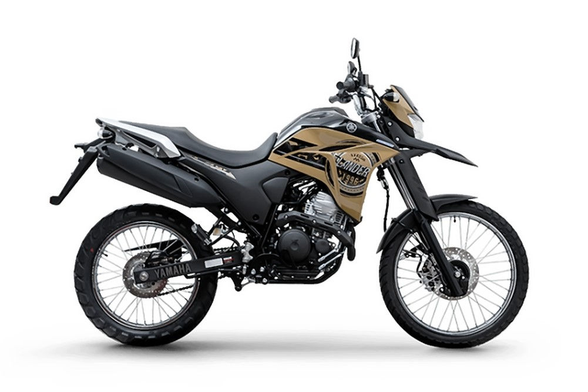

Motos Yamaha: Guia Completo dos Modelos Populares no Brasil em 2026
As motos Yamaha são reconhecidas pelo equilíbrio entre desempenho, economia e design moderno. Em 2026, a marca mantém forte presença no mercado brasileiro, especialmente nas categorias street, naked e trail de média cilindrada.
A Yamaha investe constantemente em tecnologia, oferecendo motores com injeção eletrônica eficiente, freios ABS em diversos modelos e painéis digitais completos. Abaixo você confere os principais modelos Yamaha, com preços aproximados, especificações e características.
Principais Modelos Yamaha em 2026
| Modelo | Preço Aprox. (2026) | Motor / Potência | Principais Características |
|---|---|---|---|
 Yamaha Fazer 150
Yamaha Fazer 150
|
R$ 17.000 – R$ 19.000 | 149 cc / 12,4 cv | Consumo até 40 km/l, painel digital completo, freio a disco, ideal para uso urbano diário. |
 Yamaha Factor 150
Yamaha Factor 150
|
R$ 15.500 – R$ 17.500 | 149 cc / 12,2 cv | Modelo econômico, confortável, manutenção acessível e ótima para deslocamentos urbanos. |
 Yamaha FZ25
Yamaha FZ25
|
R$ 22.000 – R$ 24.000 | 249 cc / 21,5 cv | Naked esportiva, freios ABS, consumo médio 30 km/l, design moderno e robusto. |
 Yamaha MT-03
Yamaha MT-03
|
R$ 33.000 – R$ 36.000 | 321 cc / 42 cv | Motor bicilíndrico, freios ABS, painel digital, ideal para quem busca mais potência. |
|
 Yamaha Lander 250 |
R$ 24.000 – R$ 26.000 | 249 cc / 20,9 cv | Trail versátil, suspensão elevada, ABS dianteiro, boa para cidade e estradas ruins. |
Preços sugeridos (sem frete), sujeitos a variação regional. Valores médios praticados em 2026.
Por Que Escolher Motos Yamaha?
As motos Yamaha se destacam pela durabilidade mecânica e pelo bom equilíbrio entre consumo e desempenho. Modelos como a Fazer 150 são conhecidos pelo baixo custo de manutenção e alta economia de combustível.
Além disso, a Yamaha oferece boa rede de concessionárias e peças de reposição acessíveis. Muitos modelos possuem freios ABS, aumentando a segurança.
Dicas para Comprar uma Yamaha
Antes de comprar, considere seu tipo de uso. Para economia e cidade, a Fazer 150 e Factor 150 são ótimas opções. Para quem deseja mais potência, a FZ25 ou MT-03 podem ser mais indicadas.
Sempre verifique consumo médio, custo de seguro e valor de revenda. A Yamaha costuma manter boa valorização no mercado de usados.
Tendências Yamaha no Brasil
Em 2026, a Yamaha continua investindo em design moderno, eficiência energética e melhorias tecnológicas. A marca também acompanha as normas ambientais atuais, mantendo motores mais econômicos e menos poluentes.